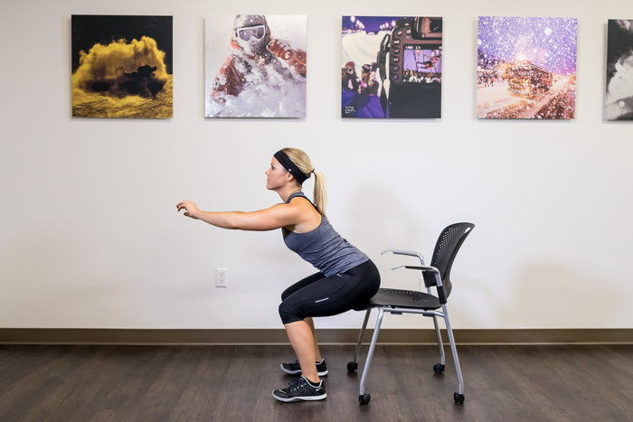
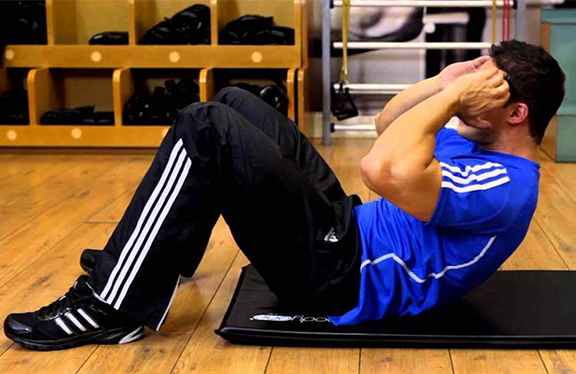

Você já se alongou? Então vamos começar os exercícios!
Agachamento com cadeira

Com uma cadeira, faça movimentos de sentar e levantar em sequências de 10 a 12 vezes por série. Tente fazer com que o movimento de assentar
não seja muito rápido, fortalecendo a musculatura trabalhada.
Para que serve: o agachamento auxilia a tonificar as penas e a musculatura do bumbum (outra vez um exercício bom para os glúteos!).
Quantas séries: a partir do segundo dia de atividades, você pode fazer entre 3 e 4 séries, sempre respeitando os limites do seu corpo.
Quantas séries: a partir do segundo dia de atividades, você pode fazer entre 3 e 4 séries, sempre respeitando os limites do seu corpo.
No que prestar atenção: mantenha os pés alinhados, com as pernas abertas, sem ultrapassar a linha do quadril. Ao descer o corpo, contraia o abdômen
e não permaneça sentado no banco (volte a subir logo que chegar).
Flexão de braço
Não deixaremos de fora aquele exercício que é visto por muitos como o clássico da musculação: a boa e velha flexão de braço. Para fazê-la,
levante o corpo com as duas mãos apoiadas no chão, alinhadas ao peito. Depois, é preciso descer o corpo até o peitoral se encontrar com o chão.
Para que serve: a flexão de braço dá conta de uma série de músculos posteriores nos braços, ombros e tronco (como o peitoral e o tríceps,
aquele que balança gordurinhas e peles fora de lugar quando damos tchau);
Quantas séries: para começar, faça 3 séries de 10 movimentos. Com o tempo, aumente para 12 a 14 por vez.
No que prestar atenção: mantenha sempre o quadril e tronco alinhados. Atenção com as mãos, que devem ficar na mesma linha do peitoral. Uma dica
para quem está começando é não ficar na ponta dos pés e sim apoiar-se nos joelhos para fazer o exercício.
Abdominal

Outro clássico das aulas de educação física, os abdominais não ficaram de fora. Tudo por uma simples razão: são muito eficientes para manter a postura
e a coluna no lugar. Deite-se de barriga para cima, dobre as pernas, cruze os braços em X sobre o troco e inicie os movimentos de elevação do troco em direção dos joelhos.
Para que serve: como dissemos, mais que cuidar da barriga, as abdominais fortalecem a musculatura da lombar e o alinhamento da coluna;
Quantas séries: você pode fazer, inicialmente, 3 séries de 15 movimentos. Vá aumentando com os meses, buscando chegar a 4 séries de 25 a 30 movimentos;
No que prestar atenção: outra vez, cuidado com o alinhamento da coluna e não faça movimentos bruscos. É interessante que, principalmente o movimento de volta, seja
mais lento: tente fazê-lo em um tempo de 3 a 4 segundos. Não puxe a cabeça com as mãos ou braços ao fazer a subida, pois isso pode causar um torcicolo ou algo pior.